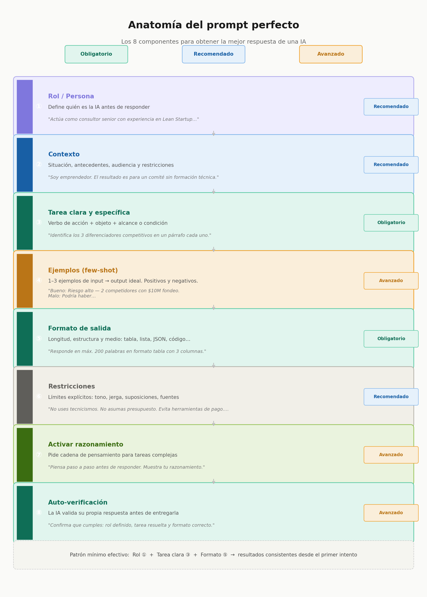

Introducción
Revisión de Syllabus, revisión de proyectos potenciales e introducción a la innovación. De la idea al producto
Syllabus
Tarea 1 descargar el Syllabus, entregar físicamente firmado, subirlo a sus páginas y mandar el documento al seleccionado para integrar todos los syllabus a un solo documento.
TRL Nivel de madurez tecnológica (Technology Readiness Level)
Puedes descargar el documento aquí
¿Cómo usas la IA?
¿La usas la IA para evitar pensar?
Prompting estructurado

Modos de prompt
| Modo | Qué significa | Ejemplo |
|---|---|---|
| Prompting | Usar IA para generar material base | "Dame 20 formas de resolver X" |
| Remix | Tomar el resultado de la IA y transformarlo | "Ahora hazlo más raro / más simple / para un niño de 10 años" |
| Crítica | Pedir a la IA que desafíe tus propias ideas | "¿Qué tiene de malo este concepto?" |
Ejercicio
El Desintoxicador digital analógico
Reto de la cena sagrada: Diseña un dispositivo 100% analógico (sin pantallas, cables ni baterías) que impida físicamente que los comensales usen el teléfono celular durante una comida, convirtiendo la desconexión en un juego de mesa.
Tienes 20 segundos para hacer un prompt para que la IA de tu preferencia te dé ideas.
Los 3 que más impacto tienen son
- El rol (orienta el tono y conocimiento que usará la IA)
- La tarea clara (un verbo de acción específico hace toda la diferencia)
- El formato de salida (la IA no adivina si quieres bullet points, tabla o código).
El error más común es dar contexto vago y omitir restricciones. Decirle a la IA qué NO hacer es tan poderoso como decirle qué sí hacer.
El Rol
Ejemplos de cómo definir el rol para análisis de negocios, de menos a más sofisticado:
Básico — solo nombra la expertise:
"Actúa como consultor de negocios especializado en startups."
Intermedio — agrega metodología y audiencia:
"Actúa como consultor senior de estrategia con experiencia en Blue Ocean y Lean Startup. Tu audiencia son emprendedores latinoamericanos sin formación financiera, así que evita jerga técnica y usa ejemplos concretos."
Avanzado — rol + postura + restricciones de sesgo:
"Actúa como analista de negocios escéptico que busca debilidades antes que fortalezas. Tu trabajo es cuestionar supuestos, no validar ideas. Sé directo, usa datos cuando sea posible, y si no tienes certeza, dilo explícitamente en lugar de inventar."
El patrón que funciona mejor es: profesión + especialidad + metodología que usa + cómo se comporta + para quién habla. Cuanto más específico el rol, menos "genérica" se vuelve la respuesta.
El Contexto
El contexto es la capa que más se subestima. La IA no tiene acceso a tu situación — todo lo que no escribas, lo inventa o lo promedia.
Hay 5 dimensiones de contexto que realmente cambian la respuesta:
1.Quién eres tú. No tu nombre, sino tu rol y nivel de expertise en el tema.
"Soy emprendedor con 3 años de experiencia, conozco el BMC pero nunca he hecho análisis de patentes."
2.Para quién es el resultado. La audiencia final cambia el tono, vocabulario y profundidad.
"El output lo presentaré a un comité de funcionarios de gobierno, no a inversionistas."
3.Qué ya existe o ya hiciste. Evita que la IA repita lo que ya sabes o rehaga trabajo hecho.
"Ya tengo el análisis FODA. Lo que necesito es la estrategia, no el diagnóstico."
4.Restricciones reales. Tiempo, presupuesto, tecnología disponible, limitaciones del equipo.
"El equipo son 2 personas, presupuesto cero, necesito resultados en 2 semanas."
5.El "para qué" final. La intención detrás de la tarea. Cambia completamente lo que la IA prioriza.
"No quiero el análisis para publicar — es para decidir si pivoteo o sigo."
Ejemplo con y sin contexto — misma tarea, resultados muy distintos:
❌ Sin contexto:
"Dame una estrategia de marketing para mi app."
✅ Con contexto:
"Tengo una app de validación de ideas para emprendedores en México, etapa pre-revenue, usuario típico es 25-35 años autodidacta. No tengo presupuesto para ads. Necesito una estrategia de adquisición orgánica para los primeros 500 usuarios. Ya probé posts en LinkedIn sin resultado."
La regla práctica: si al leer tu prompt alguien que no te conoce pudiera dar una respuesta genérica, falta contexto. El contexto perfecto hace que solo haya una respuesta correcta posible.
La Tarea
La tarea es el núcleo del prompt. Todo lo demás la sirve. Si la tarea es vaga, el contexto y el rol no salvan la respuesta.
La fórmula base:
Verbo de acción + Objeto específico + Alcance o condición
Verbos que funcionan vs. verbos trampa:
| ❌ Vago | ✅ Específico |
|---|---|
| Ayúdame con… | Redacta / Analiza / Compara |
| Dime algo sobre… | Resume en 3 puntos clave |
| Explícame… | Extrae / Clasifica / Genera |
| Hazme un análisis | Identifica los 5 riesgos principales |
| Dame ideas | Propón 3 nombres con su justificación |
El mismo objetivo, 3 niveles de claridad:
❌ Malo:
"Ayúdame con mi producto."
⚠️ Regular:
"Analiza mi producto de vigilancia tecnológica."
✅ Bueno:
"Identifica los 3 principales diferenciadores competitivos de una app de vigilancia tecnológica para PYMES latinoamericanas, comparados con herramientas como Derwent y Espacenet, en un párrafo por diferenciador."
3 técnicas avanzadas:
Ancla el resultado esperado — describe el output, no el proceso:
"El resultado debe ser una tabla de decisión, no un texto explicativo."
Usa restricciones numéricas — acotan sin limitar creatividad:
"Exactamente 3 opciones. Ni más, ni menos."
Separa tareas si hay más de una — una tarea por prompt cuando sea posible, o enuméralas si van juntas:
"Haz dos cosas: ① resume el problema en una oración, ② propón una solución accionable esta semana."
Ejemplo para el taller de innovación:
"Genera 4 actividades de calentamiento creativo para un taller de IA de 90 minutos dirigido a emprendedores sin conocimiento técnico. Cada actividad debe durar máximo 10 minutos, requerir cero tecnología, y conectar con el concepto de prompt engineering que verán después."
Verbo claro → objeto concreto → alcance definido → condiciones reales.
TIP
Iteración Dialéctica : En el contexto creativo, el prompt no debe verse como un "pedido de restaurante" (donde lanzas el pedido y esperas el plato), sino como una conversación iterativa con un colaborador.
Layered Prompting: (Prompt por capas): No metas toda la información en un solo bloque gigante. La realidad de la creatividad es que el mejor resultado surge de ir refinando la visión.
Evita la alucinación y el bloqueo: Si le pides a la IA que cree una campaña, un logo y un guión en un solo mensaje, perderá calidad en cada elemento.
Aumenta la "co-autoría": En lugar de esperar un resultado final, el usuario aprende a guiar la IA para que aprenda su estilo personal.
Restricciones
Concepto Rápido: Por Qué las Restricciones Impulsan la Creatividad
La IA rinde mejor cuando se le dan restricciones. Sin restricciones, produce el promedio de todo lo que ha visto. Con restricciones, se vuelve interesante.
Prompt vago → Resultado promedio
Prompt específico → Resultado interesante
Prompt restringido → Resultado inesperado
“Tight boundaries force the brain to get clever. Because the "sandbox" is tiny, the mind is pushed to innovate rather than relying on endless, unstructured possibilities.”
Patricia Stokes Creativity from Constraints
Business Blue Print
El IDEO Business Blueprint (enseñado a través de IDEO U) es un lienzo de una página que traza un modelo de negocio centrado en el ser humano. Ayuda a los innovadores a probar y construir estrategias viables alineando las necesidades de los clientes, las fuentes de ingresos y las operaciones antes de lanzar.
Componentes Clave
- Clientes Objetivo: Las personas o segmentos específicos a los que tu producto o servicio pretende servir.
- Propuesta de Valor: El problema único que resuelves y el valor central que ofreces a esos usuarios.
- Oferta: El producto, servicio o experiencia real que llevas al mercado.
- Modelo de Ingresos: Cómo tu negocio generará dinero y capturará valor financiero.
- Estructura de Costos: Los gastos clave y los costos operativos necesarios para ejecutar el modelo.
- Canales y Socios: Cómo llegas a tus clientes y los socios clave que ayudan a entregar la oferta.
Las Tres Lentes del Diseño. El plan se basa en equilibrar tres criterios fundamentales para la innovación:
- Deseabilidad: ¿La gente lo necesita o lo quiere?
- Viabilidad: ¿Puedes realmente construirlo y entregarlo?
- Factibilidad: ¿Tiene sentido financiero como un negocio sostenible?
Puedes abrir La presentación aquí
Creatividad asistida: Generación de Ideas a Velocidad
SCAMPER
El método SCAMPER es una técnica de creatividad e innovación. Sirve para generar ideas nuevas o mejorar productos, servicios y procesos que ya existen. Funciona como una lista de preguntas basadas en siete acciones
| Letra | Verbo | Qué preguntar |
|---|---|---|
| S | Sustituir | ¿Qué puedo reemplazar en esto? |
| C | Combinar | ¿Qué puedo fusionar con otra cosa? |
| A | Adaptar | ¿Qué existe que pueda tomar prestado? |
| M | Modificar / Magnificar | ¿Y si lo hago más grande, pequeño, rápido? |
| P | Poner en otros usos | ¿Quién más podría usar esto? |
| E | Eliminar | ¿Qué puedo quitar y que aún tenga valor? ¿Como puedo sustituir un componente crítico y sustituirlo con“algo” del contexto? |
| R | Revertir / Reorganizar | ¿Y si invierto el modelo por completo? |
Ejemplo práctico por equipos de 2
1 por parejas pidan a su IA que les de 3 números aleatorios entre 1 y 6
Puedes abrir el ejercicio SCAMPER aquí
Propuesta de Proyectos
Nuevas tecnologías en el IDIT
Sugerencia:
- ¿Bastón para ciegos autoguiado? / ¿Comandos de voz por teléfono? RTK
- Tractor eléctrico autoguiado RTK o bien otros productos
- Eliminador de hierba inteligente RTK
- Geofencing para ganado RTK Otro enlace
- Rep Rap Micron, All3DP Git, Vik
- Detección temprana de movimiento de tierras, Deslaves CDMX, Atlas de riesgo, Congreso pide atención
- Control Avícola Inteligente
Tarea
- Entregar el syllabus firmado para la semana y colocar el syllabus firmado en la página de semana 1
- Mandar al compañero seleccionado el pdf de su syllabus firmado para que lo recolecte en un solo archivo
- Hacer sus páginas personales en github. Para esto pueden utilizar la plantilla y las instrucciones en este repositorio
- Escribir la dirección de sus páginas en Esta Lista
- En equipo de 2 elegir el área de su interés para desarrollar su proyecto final. Si ya tienen proyecto, comenzar a ampliar las posibilidades del mismo
- Hacer una presentación breve de su ejercicio SCAMPER